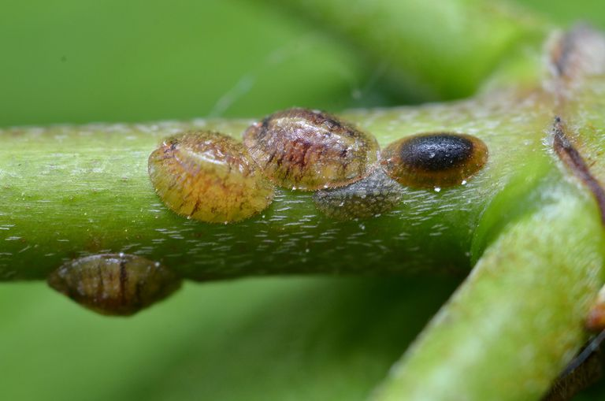

Scales | Plant Pests
Pest attacks are much more common outdoors in the garden, but even the most experienced houseplant owner will still fall victim to an attack indoors from time to time. My heart sank the first time I came across scales. I thought I was doing everything right?! Don’t worry; we will work through it and eradicate these little buggers!

I have only had one case of scales, and that was on a fig leaf plant. It took over a month to find and identify the darn things. I had purchased the plant from a local florist, and I kept in close contact with them once I first noticed that something wasn’t right. Finally, one night around midnight, I pulled out Bob’s magnifiers and started to inspect the plant. I was determined to get the bottom of this issue.
There it was, the mother of all scales. I quickly referred to her as the grand poobah. At first, I didn’t know what I was looking at, but I knew it wasn’t good. Thank goodness for Google, for within just minutes, I had the official name for her… she was a scale! After that discovery, I knew what to look for and went to work.
The scale is a tricky pest to identify and can be challenging to eradicate. The insects have a hard outer brown shell that locks them in place, a bit like barnacles on a beach at low tide. They are neatly camouflaged, because even if you are looking at them directly, to the untrained eye, they may still look like a natural blemish on the plant leaf. This is why it’s good to own some magnifiers and a Sherlock Holmes hat.
At first, I had all the confidence in the world that I was going to save this gorgeous plant. But after sending some photos to the florist for assistance, she told me over the phone to “GET THAT PLANT OUT OF YOUR HOUSE AND TRASH IT!” My heart sank. If I didn’t have a house full of lush green plants, I would have fought for the plant’s life. But I couldn’t risk it. The florist told me that she would put a credit on file for me and was sorry for all my trouble.
So, should you find scales on your plant, you will need to be extremely diligent about controlling or removing them. If you catch the problem early enough, pruning out the infested stems could alleviate the problem. Keep a close eye for several weeks to make sure no new scale appears on the plant. Dispose of the pruned stems immediately. And be sure to keep the plant isolated until you know for sure that the situation has been adequately dealt with.
Remove existing scales on houseplants by rubbing gently with a facial-quality sponge or cotton swab dipped in rubbing alcohol. The alcohol alone should kill the scale, but the dead insects will remain on your plants and make it difficult for you to scout for new infestations. The small facial sponges can be better than cotton swabs because the swabs can leave bits of cotton on the plant, tricking the eye into thinking they are mealybugs.
What does a scale do to a plant?
- In many cases, heavy infestations build up unnoticed before plants begin to show damage.
- Scale-damaged plants look withered and sickly.
- Leaves turn yellow and may drop from the plant.
- They may also have a sticky sap or a black fungus on the leaves and stems.
- Heavily infested plants produce little new growth.
- For heavy infestations, it is sometimes best to throw away the plant.

What do they look like?
- There different types of scale: armored and soft (mealybugs). Armored (Hard) secrete a hard protective covering (1/8 inch long) over themselves, which is not attached to the body. The hard scale lives and feeds under this spherical armor and does not move about the plant. They do not secrete honeydew. Soft secrete a waxy film (up to 1/2 inch long) that is part of the body. In most cases, they can move short distances (but rarely do) and produce copious amounts of honeydew. Soft scales vary in shape from flat to almost spherical.
- Scale insects vary significantly in color, shape, and size. They are often somewhat rounded, but not always. Different varieties of scale can be white, black, orange, or a color that blends in with the plant’s coloring, making them even more challenging to detect.
- They are immobile once they mature. They have an outer shell that makes it tough to deal with them because they aren’t affected by many insecticides. So don’t expect to see them scurrying around.
- Get yourself an excellent magnifier! Always keep an eye on your plants. I check mine thoroughly during every other watering.
Where do they linger?
- Look closely at the undersides of the leaves or on the stems, and you will see them as small round or oblong brown discs.
- Unlike other insects, they are immobile once they lock themselves into place to pierce the plant and begin feeding on sap.
Caution – Before Using a Spray
As already discussed, scale insects are usually divided into two groups: soft scale and hard armored scale. The soft scale is covered with a protective waxy substance and is a bit easier to kill than the hard armored scale. The armored scale secretes a hard shell over its body for protection from predators. The shell also makes it difficult to use a pesticide because it has trouble reaching the insect inside.
Anytime you use a home mix, it is recommended to test it out on a small portion of the plant first to make sure that it will not harm the plant. Do not spray on hairy or waxy-leaved plants. Also, avoid using any bleach-based soaps or detergents on plants, since this can be harmful to them. A home mixture must never be applied to any plant on a hot or brightly sunny day, as this can quickly lead to the burning of the plant.
So if you find yourself with a host of scales on a plant, take a moment to assess the situation. Is that plant close to others, where they may have spread? Do you have a place to isolate it as it goes through treatment? Is the plant too far gone? These are the questions that lead you to your next move. Below, I will share the steps to fight against a big case of the scales. You’ll need to catch the invasion early and act fast, since a single scale insect can lay hundreds of eggs and do so multiple times.

- If possible, take the plant outside and spray it down with water. You can also do this in the shower or tub.
- Wrap the plant pot in a plastic bag to protect the root ball and lower stems. Tie a string around the stems to close it.
- Place this in your bathtub, shower area, or outside in a place that can get wet.
- Hose the plant down one stem at a time to remove most of the scales with water pressure.
- Naturally, you will need to determine the fragility of the plant and whether it can handle the water pressure.
- Isolate the plant!
- Make a scale spray by combining the following ingredients:
- 1 quart (1 liter) of water
- 1 tsp dish soap
- 1 tsp neem oil
- 1 tsp 90-proof alcohol
- Spray this solution daily for 3 to 4 days.
- Say a little prayer.
- Inspect the plant thoroughly before re-entering it into the flock of plants.
For more in-depth information, Google “scales.” You will find a load of photos and treatments that you can use.
© AmieSue.com